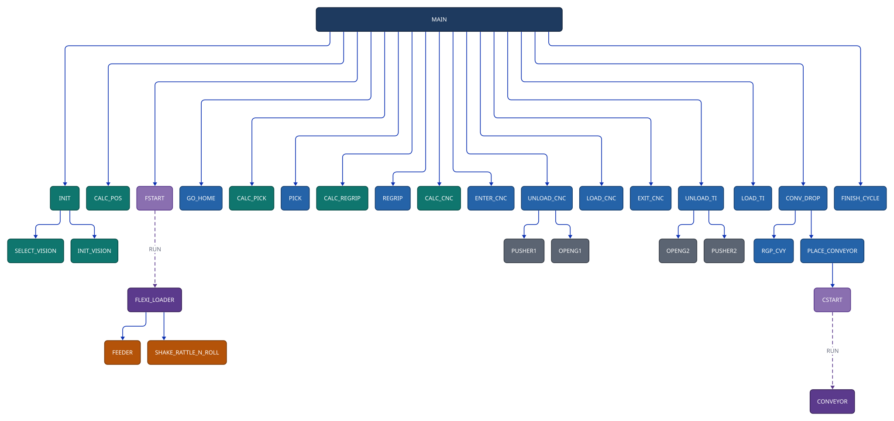
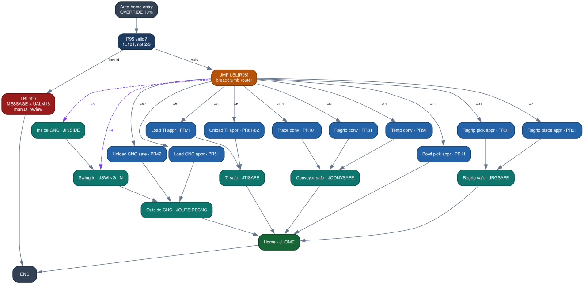

Robot Programming Example
Inside the code: a FANUC machine-tending cell and its safe-return homing.
Most of this portfolio is written rather than shown, because the code sits behind NDAs. This is the sanitized exception — real FANUC TP program structure from a delivered cell, with customer identifiers and taught coordinates removed and part identity abstracted to registers. Two programs are featured together: the machine-tending cycle and the safe-return homing routine.
The cell
A single FANUC robot feeds parts from a flexible bowl feeder through a CNC and a tube-insertion station and out to a conveyor, using iRVision to locate parts and a regrip station to reorient them. What's worth looking at here is the program structure: how the robot keeps several parts in flight at once, coordinates with each machine, and recovers predictably when one of them stalls.
Program structure — A_MAIN
- Asynchronous multitasking. Two background tasks (feeder and conveyor) run in parallel with the main cycle, coordinated through flags and
TSKSTATUSpolling rather than blocking the robot. - Pipelined part-state machine. A part advances through flag states (staged → in CNC → for insertion → out) so one part can machine while the next is picked.
- Timeout-bounded handshakes. Every equipment sync waits with
$WAITTMOUTand routes failure to a distinctUALM— no silent hangs. - Dual-gripper tooling and vision-driven pick/regrip offsets built at runtime into position registers.

Call graph from A_MAIN — solid arrows are calls; dashed arrows launch a
background task. View the runtime process flow →
Defensive handshaking
Coordinating with a CNC means waiting on the machine without ever trusting it blindly. Each exchange is bounded by a timeout and fails to a specific alarm, and part ownership only transfers after the acknowledge completes.
! UNLOAD then LOAD the CNC IF (F[61:PART_4_CNC] OR F[62:PART_IN_CNC]) THEN $WAITTMOUT = 6000 WAIT DI[104:Sync1]=ON TIMEOUT,LBL[912] ! CNC ready, or fault out CALL A_ENTER_CNC IF (F[62:PART_IN_CNC]) THEN CALL A_UNLOAD_CNC ! take the finished part F[62:PART_IN_CNC]=(OFF) F[63:PART_4_INS]=(ON) ENDIF IF (F[61:PART_4_CNC]) THEN CALL A_LOAD_CNC ! stage the raw part DO[104:Ack1]=PULSE,0.5sec WAIT (!DI[104:Sync1]) TIMEOUT,LBL[913] ENDIF CALL A_EXIT_CNC ENDIF
Excerpt from A_MAIN (comments and spacing lightly adjusted for the web; logic unchanged).
Safe-return homing — A_AUTO_HOME
A tested, deployed utility that returns the robot home along a known-safe path from
wherever it last stopped — the recurring hard problem in machine tending, where a blind
jog-to-home can drive the arm through a chuck or fixture. Every motion program writes a
breadcrumb (R[95], its last position register); A_AUTO_HOME reads it,
jumps to the retract route for that station, and converges through shared safe waypoints to home.
OVERRIDE=10% ! slow down before any motion ! route home from the last-motion breadcrumb in R[95] IF R[95:Last Motion PR]<1, JMP LBL[900] IF R[95:Last Motion PR]>101, JMP LBL[900] IF R[95:Last Motion PR]=2, JMP LBL[900] ! no route defined IF R[95:Last Motion PR]=9, JMP LBL[900] JMP LBL[R[95]] ! computed jump to the matching safe route ...retract route -> shared safe waypoint -> JHOME... LBL[900] MESSAGE[AUTO HOME REVIEW R95] ! unknown pose: alarm, do NOT move UALM[16] END
Excerpt from A_AUTO_HOME — the guard rejects invalid or undefined breadcrumbs and alarms instead of guessing.

Safe-return routing — many entry states, a handful of safe waypoints, one home.
On sanitization & the diagrams
Company and customer identifiers are removed, and taught coordinates are computed into registers at runtime, so no proprietary geometry or part data is present — only standard automation structure (feeder, CNC, conveyor, regrip). The diagrams are traced from the call structure of the programs themselves rather than drawn by hand, so what they show is what the code actually does.